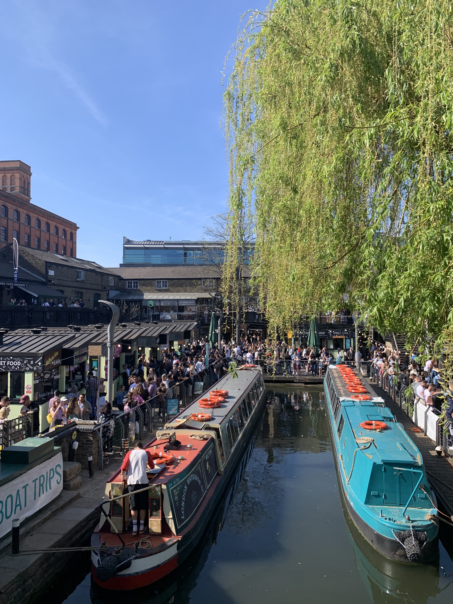
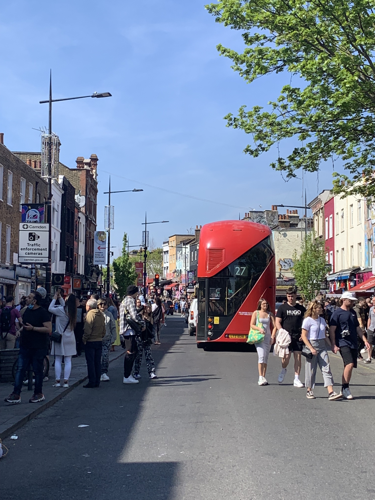
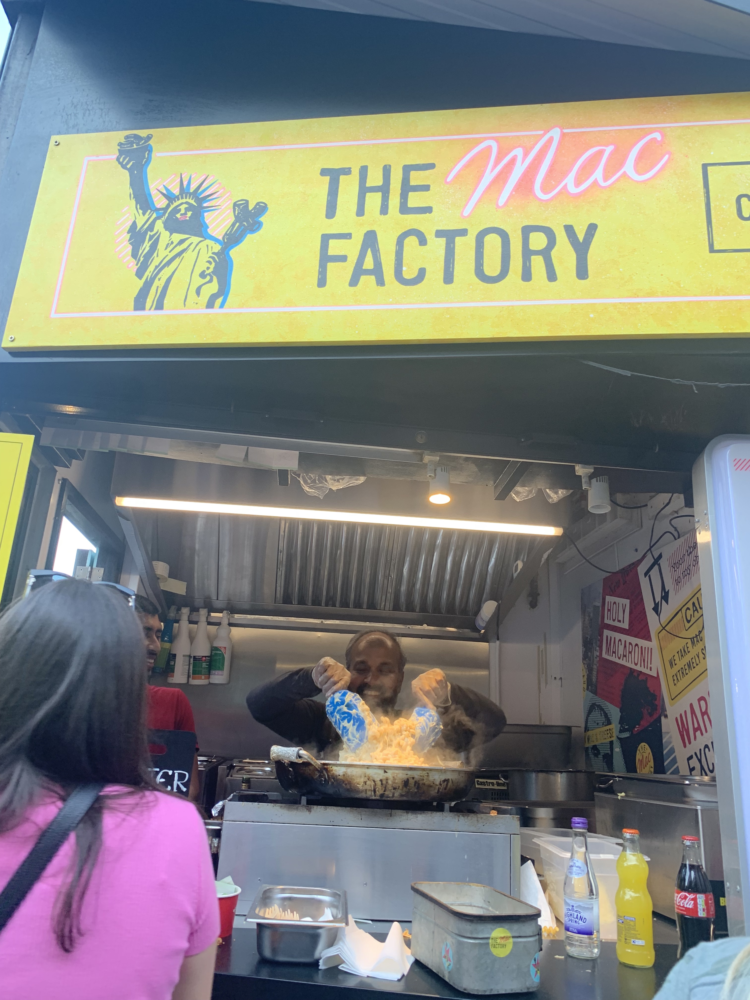

Camden Market is a world-renowned market in the heart of London's Camden Town. Spread over several streets and lanes, the market offers a unique shopping experience with a vast array of stalls and shops selling everything from vintage clothing to handmade crafts, antiques, jewelry, and more. It is a must-visit destination for tourists and locals alike.
Camden Market Views
Shop and explore Camden Road
One of the highlights of Camden Market is the food. There are over 50 food stalls and vendors offering a vast range of cuisines from all around the world. You can find everything from classic British pies to Mexican street food, Vietnamese noodle bowls, and vegan burgers. The food is affordable, delicious, and perfect for an on-the-go meal or a sit-down lunch with friends.
Foodies are MORE than welcome here
Camden Market is also known for its alt fashion scene. With over 200 independent shops and stalls, you can find unique clothing, accessories, and jewelry that you won't find anywhere else. The market is a hub for the alternative subculture, and you'll find everything from punk rock t-shirts to gothic corsets and cybergoth boots.
As for the music scene in Camden Market, there are several venues in the area that host live music events and you can catch a gig or a concert from both big and small artists. The area is home to Amy Winehouse and you can see street art dedicated to her as you walk along Camden Rd. There is an Amy Winehouse Museum not far from the market.
Other attractions in Camden Market include street art, vintage shops, and antiques stalls. The market has a lively and bustling atmosphere, with street performers, artists, and musicians adding to the eclectic vibe.
Camden Market is a unique and exciting destination that offers something for everyone. With its vast array of shops, food stalls, and music venues, it is a must-visit destination for anyone visiting London.